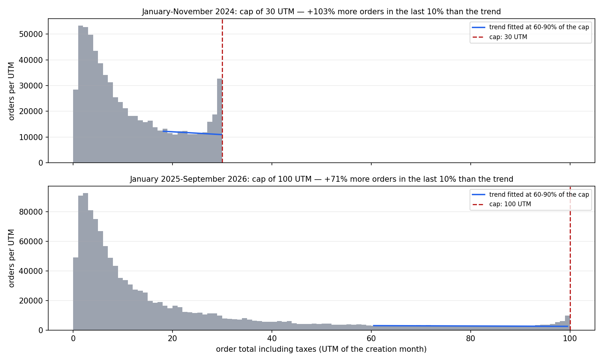
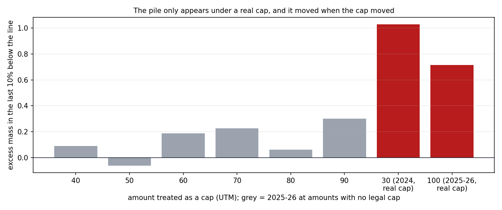
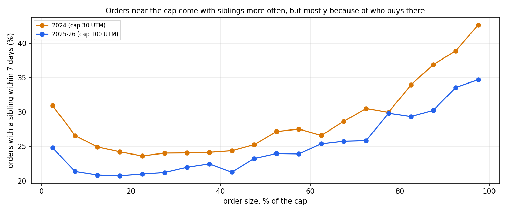
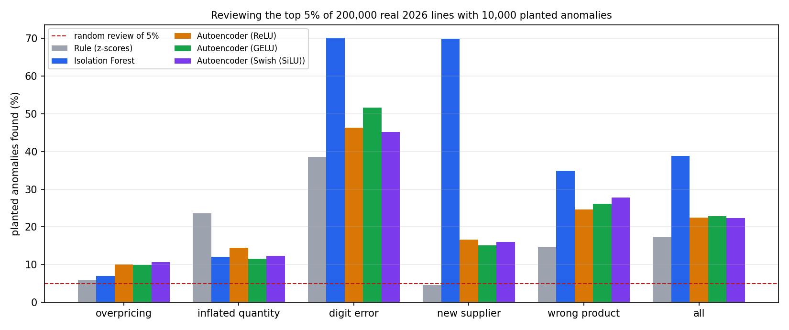
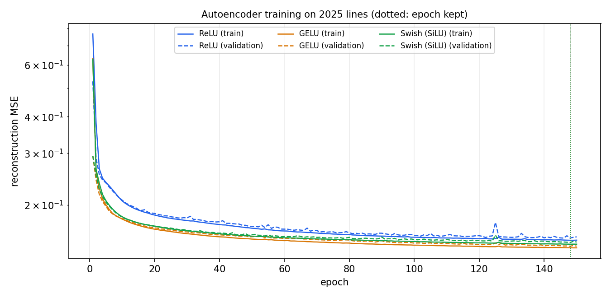

On 13.7 million real purchase-order lines from Mercado Público, Compra Ágil orders pile up just under the legal cap, twice the trend under the old 30 UTM cap and 71% above it under the new 100 UTM one, and the pile moved when Ley 21.634 moved the cap; but within the same buyer, orders at the cap come with a same-supplier order within a week only 2 points more often, so most of the pile looks like purchases sized to the limit rather than split under it.
This page shows the project's results. The methodology, the design decisions and the limitations are documented in the repository's README.
1. The pile under the cap

Compra Ágil orders by total amount: under either rule, the density is flat between 60% and 90% of the cap and climbs sharply in the last 10% below it, which is where the excess is measured against a straight line fitted on the flat part.

The same measure at amounts that never were a cap stays between -6% and +30%; under the real caps it is 103% and 71%, and at 30 UTM it fell to 18% as soon as the cap moved away from it.
2. Split purchases or purchases sized to the cap?

The share of orders with a same-buyer, same-supplier order within 7 days rises near the cap under both rules, from about 21% to 34% after the change.
3. Detectors on real order lines


Reconstruction error on 2025 lines for the three activations; the validation curve tracks the training one, without overfitting.